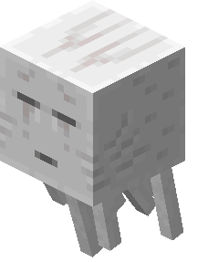
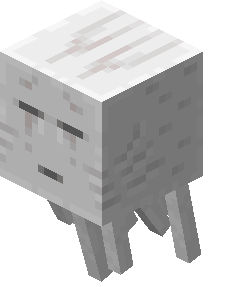

Introduction
Dans la cadre de ma première année en Bachelord chef de projet digital, j’ai réalisé un stage de quatre
mois, dont deux obligatoires.
J’ai donc été en stage chez DRD Electricité Domotique & DRP Plombier Plaquiste, situé à Caen. Ce stage s’est
déroulé du 05 Mai jusqu'au 31 Aout 2021. En présentiel la plupart du temps et en distanciel quand la situation le
nécessitait.
Durant ce stage, j'ai travaillé avec l'équipe de DRP Plombier Plaquiste sur leur site internet, et sur
celui de leur partenaire. Ce stage m'a permis de mettre en pratique mes connaissances, et d'en acquérir de
nouvelles.

 
